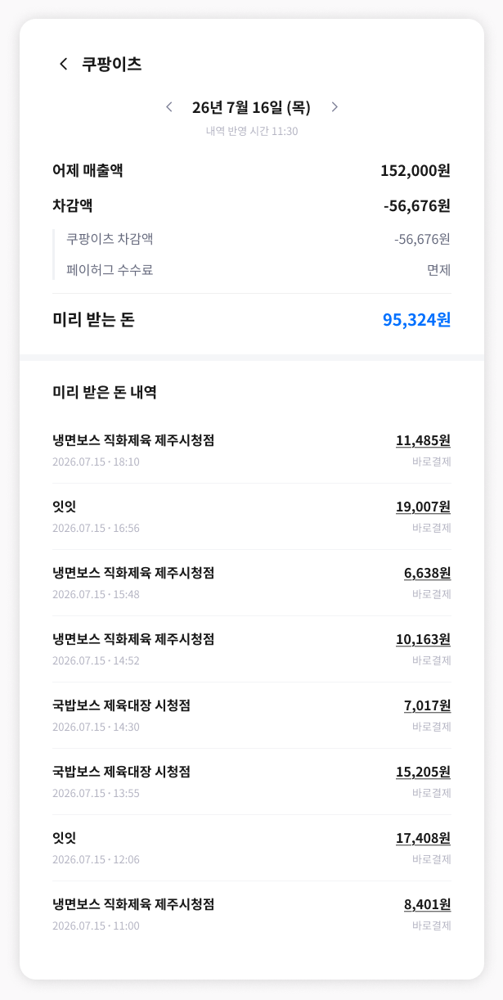

PART 4 · 사장님이 보는 화면
29
배달앱은 채널별로 나뉩니다
같은 배달앱이어도 화면에 뜨는 줄이 다릅니다. 이게 "왜 배민만 많이 떼가냐"는 질문의 답입니다
1 배달의 민족

차감액 안에 광고비 줄이 있습니다
「어제 매출액」에서 「차감액」을 빼면 「미리 받는 돈」이 됩니다. 배민은 차감액이 배달의 민족 차감액 + 광고비로 나뉘어 있습니다. 광고비는 사장님이 배민에 직접 집행하신 광고 대금이라, 배민이 정산할 때 미리 떼고 보냅니다. 페이허그가 가져가는 게 아닙니다.
›
2 쿠팡이츠

여기엔 광고비 줄이 없습니다
쿠팡이츠는 차감액이 쿠팡이츠 차감액 한 줄뿐입니다. 줄이 빠진 게 아니라, 그 채널에서 광고비가 발생하지 않았기 때문입니다. 플랫폼이 보내주는 정산 내역을 그대로 보여드리는 구조라서 채널마다 줄 구성이 다릅니다.
화면 안내 문구
(원문 그대로)
(원문 그대로)
"[만나서 결제]는 배달의 민족 선정산 대상이 아니며 매출액에서 제외돼요."
"[배민원 주문]의 매출액은 고객의 배달팁이 제외된 금액이에요." — 주문 한 건을 열면 아래쪽에 이 안내가 붙습니다. 사장님께는 이 문장을 그대로 읽어드리세요.
"[배민원 주문]의 매출액은 고객의 배달팁이 제외된 금액이에요." — 주문 한 건을 열면 아래쪽에 이 안내가 붙습니다. 사장님께는 이 문장을 그대로 읽어드리세요.
가맹점 앱 · 배달의 민족 / 쿠팡이츠 채널 상세 화면 원본 | 화면 속 날짜·금액·상호는 예시 데이터입니다
payhug